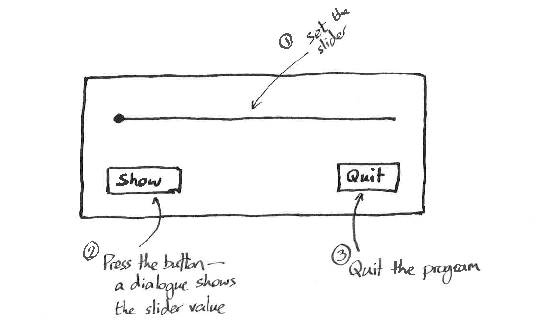

Unless otherwise noted, all materials on these pages
are licenced under a Creative
Commons Licence.
Unless otherwise noted, all materials on these pages
are licenced under a Creative
Commons Licence.
Sometimes, it's important to think hard, and work out if what you're writing in your code isn't more for the benefit of the computer than for you. This is one of those times.
CPUs have hardware support for subroutines. So languages like C, which is about as "close to the metal" as you can get without assembler, base their whole modus operandi on breaking up larger programs into a bunch of subroutines, which pass arguments around and reserve local memory. CPUs are built with (one or more) stacks which make this easy for the compiler and fast to run. But when a program gets bigger, and particularly when it has to respond to asynchronous events, this isn't necessarily the easiest way to express things.
Donald Knuth, a renowned computer scientist, famously described subroutines as "special cases of ... coroutines." [Knuth, Donald Ervin (1997). Fundamental Algorithms. The Art of Computer Programming. 1 (3rd ed.). Addison-Wesley. Section 1.4.2: Coroutines, pp. 193–200. ISBN 0-201-89683-4.)] So what's a coroutine? Here's an example.
Suppose you wish to simulate those ticket dispensers you get in up-market delicatessens. Anybody can walk in and take a ticket; every time a ticket is dispensed, the number is one bigger than the previous ticket. In our software version, I'm going to add the facility to skip ahead. Normally we'll pass 0 and just get the next number; otherwise we can pass a number of tickets to skip (these numbers are lost forever).
# Turn counting with an Object
class TurnCounter:
# Initialise the sequence counter to 0.
def __init__(self):
self._seq = 0;
# Return the next in sequence,
# skipping as required.
def get(self, skip):
ticket = self._seq
self._seq += 1 + skip
return ticket
We'd then create an instance of the object (thus
initializing its state) and repeatedly call
get(0) to receive tickets.
In [31]: tc=TurnCounter() In [32]: tc.get(0) Out[32]: 0 In [33]: tc.get(0) Out[33]: 1 In [34]: tc.get(1) Out[34]: 3
# Turn counting with a co-routine
# (also called a generator in Python)
def turn_counter():
# Our state variable,
# local to this function
seq = 0
while True:
# Pass back the sequence count
# to our coroutine, and receive
# the next skip value
skip = yield seq
# My turn to use the CPU: do some
# processing and yield the result
seq += 1 + skip
The clue's in the name: a coroutine isn't subordinate to its caller like a subroutine. Subroutines get passed variables, process them and return a value. Any information stored in the subroutine's local variables is lost when the subroutine returns.
Coroutines get created, and are allowed to proceed by the routine
that created them. The coroutine then takes the conn until
it's ready to pass control back to the original routine
— its coroutine — using the yield
command.
Execution now passes back to the original coroutine until it
decides to yield control back again. It can do that by invoking
next() with the coroutine as an argument, or to
send data to the coroutine, using the coroutine's send()
method. send() causes execution to continue after
the yield command which relinquished it, and with
the sent value being treated like returned data.
The important thing here is that the coroutine's state — its local variables and so forth — remain intact with the same values as they had when the thread of execution was yielded on the previous occasion.
In [35]: tc = turn_counter() In [36]: tc Out[36]:In [37]: next(tc) Out[37]: 0 In [38]: tc.send(0) Out[38]: 1 In [40]: tc.send(1) Out[40]: 3
Here we create a generator (coroutine) called tc. Python knows
it's a generator because its definition contained
a yield statement. Then we run the coroutine
to the first yield with next(tc)
(tc.send(None) would have worked too). We get the
first ticket as a result. Then we as for two more tickets,
and the last time ask to skip one.
So what's the benefit of the coroutine approach over using
an object? The answer is that to program well, you should
say what you mean. In the case of a single object
and a single coroutine, the difference between
the two methods of expression
aren't that obvious. But suppose there were many different
coroutines which became ready to run at different times
and that they all had arbitrary, equally important roles
in the overall program... choosing an object hierarchy and
deciding which object called which others might well be
syntactically opaque compared with an egalitarian collection
of coroutines. Check out Python >=3.4's
asyncio
library (and keep reading to the end of
this
section) for an example of how coroutines can simply
and elegantly organise different subco-tasks
under the auspices of an event loop.
No imagine each of the coroutines belonged to different
graphic objects, each of which needs to communicate with
other objects at any time the user chooses to interact
with them. They can do this by communicating though
a single executive which can gather all
the information the waiting coroutines may (asynchronously)
yield. Does that sound like a GUI yet?
One last point to make is that what is being described here is in no way "parallel processing". It is co-operative multitasking. The coroutines get to keep the single thread of execution until they yield it up. Coroutines don't run in parallel (for example on multiple cores of a modern CPU) but neither do they impose the considerable overhead of starting a new process, allocating resources and resynchronising the machine when necessary. You can perform a 4096-point FFT on a single core of a modern Intel processor faster than you can force two threads on two different cores to synchronise. Coroutines permit the expression of complex interactions between entities handling asynchronous events in a convenient way which is efficient for both the programmer and the computer.
Coroutines feature big-time "under the hood" of the GUI toolkit we're going to use in due course, and if you understand what they do, it will demystify what's going on. We'll also fire up a separate thread of execution which will jump to C++-space, permitting potentially generally parallel execution, but Python makes sure it will never execute code concurrently within a single instance of its interpreter.
Now, about Graphic User Interfaces...
GUI programs are generally composed from Widgets (the generic name for buttons, text entry fields, spin-boxes, sliders and other graphical components) assembled into one or more frames. The widgets are positioned by a layout manager whose job it is to construct their spacing and size in accordance with the style rules for the platform on which the program is running.
All widget sets will enable the programmer to define new widgets, but the choice of a modern and popular widget set makes it unlikely that it will ever be necessary to do more than enhance the functionality of one of the supplied widgets.
It is considered to be good design to split the interface up into three aspects: the model, view and controller.
Splitting the GUI into these three aspects ensures maximum code reuse and enables consistency of behaviour across a variety of access methods with as little code modification (read "breaking") as possible. The diagram summarises the interactions. The widget set will permit us to add ways for the widget's controller to let the application program know when something has happened.
We're going to use the Qt widget set to design a GUI program. Qt (pronounced "Cute") is a cross-platform toolkit written by Trolltech, and currently owned by The Qt Company in Finland. It is dual licensed under both version 3 of the GNU Public License and a proprietary licence which permits distribution of software without the obligations attached to GPLv3. This document is based on version 5 of Qt.
Qt is written in C++, so the documentation assumes that the reader will be creating classes and calling methods from a C++ program. We're going to use it via Python modules created from the C++ API using SWIG. The top-level Python module is called PyQt5. PyQt5 has its own documentation but for the most part, it simply instructs you how to load the Python class and then simply directs you to the Qt C++ documentation page.
At some time or another, you'll most likely be asked to use some other GUI framework to write a program. There's no good reason for that as there are a huge number of reliable and large-scale applications written with Qt, for example MusE, Rosegarden, MuseScore, Frescobali, Kdenlive, Spyder, Skype, Google Earth, Scribus, Sibelius, VLC and Spotify's client to name but a few.
The Qt application usually consists of a QApplication
instance and one or more QWidgets which define the
visual appearance. Depending on the platform style guidelines,
the widget might consist of a framed window, a menu bar,
a toolbar, and an interaction area consisting of a variety
of widgets drawn from the familiar standard types (spin boxes,
editable and read-only text areas, images, sliders, push-buttons
and so on). An application might present the user with dialogues
in other windows during the course of its execution.
Such dialogues might be modal (grab the application's inputs
until it is dismissed) or not depending on the program's
requirements.
Once the widgets are created they can be laid out using
one of Qt's layout managers. This ensures that
window resizing causes the widgets to expand and/or
move around in an expected fashion. Several different
layout algorithms are available and one can be chosen
to suit the complexity of the GUI being designed.
The program will create a layout manager instance
and attach it to its window, then add widgets to
the layout manager. Layout managers may be nested
hierarchically. Having created, populated and laid-out
the window, its show() method can be
called to make it appear on the screen, and control
handed over to Qt's event-handling loop.
That's only half the story, however. If you want the
program to respond to user inputs, the widgets have
to inform the relevant functions of the application
when user-events happen to them. Different GUI
frameworks have different ways of doing this, and
the way Qt does it has been somewhat controversial
in the past. The idea is that QObjects
can emit signals to send information about
events to interested listeners and slots
to receive such information. Why is this controvertial?
Because the slots were implemented by extending
the C++ language and then running a
metaobject compiler on them to obtain a
compilable C++ file. This enraged the C++ standards
people and almost started a civil war. Consider the following
C++ code. It creates a window with a single button
(that bit's omitted for brevity) and changes the
button's label when it's clicked.
class MyWindow :
public QWidget,
public Ui::AMainWindow
{
Q_OBJECT
public:
explicit MyWindow(QWidget *parent = 0) :
QWidget(parent)
{
// create the interface
this->setupUi(this);
// connect the signal to lambda
// (using [this] to capture
// the object's this pointer)
connect(theButton,
&QPushButton::clicked,
[this]() {
this->setString("Bye!");
});
}
public slots:
void setString(QString text)
{
theButton->setText(text);
}
};
The Q_OBJECT gets expanded to include
the necessary "boiler-plate", but the main bone
of contention is the public slots:
access specifier. public slots: isn't
valid C++: it's expanded by the MOC to generate
the necessary public function which can accept
signals. Then then QObject's
connect function is used to cause
theButton's clicked
signal to propagate to the given function.
In this case we want to pass an argument,
so we use a C++ λ-expression to call
the this MyWindow's setString()
method with the desired value.
As you can imagine, building a hierarchy of widgets
which send each other signals presents a challenge
with C++'s memory model. Qt is very carefully written
to handle memory very efficiently and seems to be
watertight — at least I've never experienced
a memory leak that wasn't my fault. It even has a
QObject::deleteLater() method so you
can request the event loop to destroy an object
as soon as it's safe to do so. Of course, the other
way around that is to write in Python, where the
memory-management point is moot.
Let's write an application!
Perhaps more than with any other kind of program, you should begin by sketching the appearance of what you want. Here's what I want the main window of my program to look like.

The code to create my class, ExecutiveToy
is this:
class ExecutiveToy(QWidget):
def __init__(self, parent = None):
super().__init__(parent)
self.create_UI(parent)
I'm going to break the layout into two rows, so the
main layout manager of my window will be a QVBoxLayout
with two elements:
The lower of the two rows will contain three elements:
two QPushButtons and some elastic filler
to push the buttons to the outer edge of the window.
That way it will keep a consistent layout if and when
it is resized.
Let's create the widgets. Continuing the ExecutiveToy
class:
def create_UI(self, parent):
# Create a slider and two buttons
self.mySlider = QSlider(Qt.Horizontal)
self.showButton = \
QPushButton(self.tr('&Show Value'))
self.quitButton = \
QPushButton(self.tr('&Quit'))
# No parent: we're going to add this
# to vLayout.
hLayout = QHBoxLayout()
hLayout.addWidget(self.showButton)
hLayout.addStretch(1)
hLayout.addWidget(self.quitButton)
# parent = self: this is the
# "top level" layout
vLayout = QVBoxLayout(self)
vLayout.addWidget(self.mySlider)
vLayout.addLayout(hLayout)
Now to define the actions. I'm going to do
two things. First I'll connect the clicked
signals of the buttons to their respective
slots, then I'll provide the functions which
will act as slots. PyQt provides
decorators
to hint to the interpreter that a function is
a slot. If you are expecting your slot to
receive arguments, you can say
@pyqtSlot(int) for example.
The quitClicked() method simply
closes the widget; the showClicked()
method creates a modal dialogue box, populates
it with some data from the slider object,
and gives it control.
self.quitButton.clicked.connect(
self.quitClicked
)
self.showButton.clicked.connect(
self.showClicked
)
# Now the slots which accept events
@pyqtSlot()
def quitClicked(self):
self.close()
@pyqtSlot()
def showClicked(self):
msg = QMessageBox()
msg.setIcon(QMessageBox.Information)
msg.setText('Current Slider Value')
msg.setInformativeText(
'When requested, value was '
+ str(self.mySlider.value())
)
msg.setWindowTitle('mySlider')
msg.setDetailedText('That is all I know')
msg.setStandardButtons(QMessageBox.Ok)
msg.exec()
To make it all work, you'll need to top and tail the code
with the necessary imports and a few lines
to create the application and its window, make the window visible,
then pass control to Qt's event loop until the window is closed,
whereupon the application should exit cleanly. Here is
the appropriate incantation:
import sys
from PyQt5.QtCore import \
Qt, pyqtSlot
from PyQt5.QtWidgets import \
QApplication, QWidget, \
QSlider, QPushButton, \
QMessageBox, \
QVBoxLayout, QHBoxLayout
...
if __name__ == "__main__":
app = QApplication(sys.argv)
window = ExecutiveToy()
window.show()
sys.exit(app.exec_())
Zetcode's Introduction to PyQt5
Qt5 documentation
PyQt5 documentation
Python Decorators
Being single-threaded, The Qt executive has to be in charge at all times. So it isn't possible to write a single function which loops around for an arbitrary time generating audio samples. This is why we asked you to make your audio-generating classes capable of working with small buffers, and be called repeatedly as more samples were required.
The framework with Qt to deal with audio samples is called QtMultimedia. It uses a stream model to create and route audio and/or video streams. If we use QtMultimedia, the executive will provide the necessary time for the Qt application to generate buffers of audio samples as required. However, if we want our audio synthesis object to be a bona fide output stream, we have to "play ball" with the Qt executive, and that means providing the minimum functionality it expects. This isn't intellectually taxing, but it does take around 100 lines of Python code.
We might hope that Qt also handles MIDI input and output so we can connect to MIDI event sources which will appear in our program as signals, or create MIDI synthesisers which accept MIDI events via sockets. Sorry to disappoint you. There is no MIDI support in Qt at this time. Qt is considered a general-purpose GUI framework for general use, and while that includes audio and video these days, the Qt developers think of MIDI as just a bit too specialist.
Fortunately, a(t least one) solution exists, and we'll be using python's Mido module to handle the arrival of MIDI events. This will be covered later on, but first, let's write a(n almost) trivial audio class. Meep is generates a 1kHz tone which Qt can play.
Opposite is the code for a mimimalist PyQt QIODeivce-based audio generator. It's quite long, so I've not broken it up into fragments. You'll have to pay attention.
We'll begin by defining some "application-wide" constants and here I'm just using global variables to hold the sample rate, number of channels and audio resolution in bits. I'm also specifying how big the "chunk size" is. That is to say, if I'm asked for the next batch of samples, the caller's going to get this many milliseconds' worth of audio.
After importing the module's dependencies,
I'm declaring my signal generating class Meep.
Meep will generate at most SAMPLES_PER_READ
samples per request. Making this number smaller means
lower latency between changing a control parameter
and the response taking effect in the audio output
stream, but also causes a greater overhead passing
samples around and in the worst case can lead to
"stuttering" if the samples are prepared before
the audio playback hardware needs them.
Meep is derived from QIODevice, so its initialiser
first makes sure the base class is initialised.
The it reserves a QByteArray, data,
which will hold the raw audio samples, and
phase which will preserve the final
phase of the previous audio output between calls
to make sure the audio is click-free.
QIODevices are supposed to be capable of dealing with
a number of output sample formats, but this is a minimum
example so only 16-bit, signed integer, little-endian
samples will be countenanced. The format type is checked
and if it agrees, a congratulatory message will be issued.
A QIODevice can be used it one of two ways.
In push mode, you write a bunch of samples to
it and it plays them. This is great for simple "plink fizz"
special effects which might be needed to alert that user
that something interesting has happened. However, we need
to use the device in pull mode so that we're
informed via the Qt system when more samples are required,
then supply them. This means all the other GUI-related
activity can continue concurrently with a continuous audio
output. Such a device needs to supply a start method
and in this case it's a simple one: the parent
QIODevice's open method to indicate
the device's readiness and to place it into read-only mode.
The other required method is readData
but I've chosen to provide a generateData
method to segregate the sample generation activity
from the mechanics of preparing samples for dispatch.
It uses a trivial vector-sin together
with arange to create a sinusoid from
an array of phase angles, then saves the phase for
the next call so that the waveform recommenced from
the "same place". In case the phase angle eventually
waxes too large, it is stored modulus 2π.
The 16-bit integer samples are
returned as a byte array using the tostring
method of a numpy array.
Qt's executive will call readData when
the output stream needs more bytes. Note that the
number of bytes is what is specified, not
the number of samples. We know we only work with
16-bit integers, so we ask generateData
to produce half that number of samples or,
to preserve interactivity, SAMPLES_PER_READ
samples if that number is smaller.
The binary representation of the samples is returned.
Now for the QWidget which deploys a
Meep. The audio format of the Meep
needs to be specified, so the local variable format
specifies this. An audio output device is summoned
into existence with an agreeing format and stored
in self.output. Its buffer size is kept to within
the limits specified by the CTRL_INTERVAL.
Finally, self.generator is an instance of Meep.
After starting our Meep it's used to supply
the input data to self.output by passing it
to the latter's start method.
The rest of the code is unremarkable.
SAMPLE_RATE = 32000
AUDIO_CHANS = 1
SAMPLE_SIZE = 16
CTRL_INTERVAL = 100 # milliseconds of audio
import sys
import numpy as np
from PyQt5.QtCore import QByteArray, QIODevice
from PyQt5.QtMultimedia import QAudioFormat, \
QAudioOutput
from PyQt5.QtWidgets import QApplication, \
QWidget
class Meep(QIODevice):
SAMPLES_PER_READ = 1024
def __init__(self, format, parent = None):
QIODevice.__init__(self, parent)
self.data = QByteArray()
# Preserve phase across calls
self.phase = 0
# Check we can deal with the supplied
# sample format. We're supposed to be
# able to deal with any requested
# sample format. But this is a
# _minimal_ example, right?
if format.isValid() and \
format.sampleSize() == 16 and \
format.byteOrder() == \
QAudioFormat.LittleEndian and \
format.sampleType() == \
QAudioFormat.SignedInt and \
format.channelCount() == 1 :
print(
"Meep: Format compatible. Good."
)
self.format = format
def start(self):
# Call QIODevices open
# making this object readable
self.open(QIODevice.ReadOnly)
def generateData(self, format, samples):
pps = 1000*2*np.pi/format.sampleRate()
finalphase = samples*pps + self.phase
tone = (
10000 * np.sin(
np.arange(self.phase,
finalphase,
pps)
)
).astype(np.int16)
self.phase = finalphase % (2*np.pi)
return tone.tostring()
def readData(self, bytes):
if bytes > 2 * Meep.SAMPLES_PER_READ:
bytes = 2 * Meep.SAMPLES_PER_READ
return self.generateData(self.format,
bytes//2)
class ToneGenerator(QWidget):
def __init__(self, parent=None):
QWidget.__init__(self, parent)
format = QAudioFormat()
format.setChannelCount(AUDIO_CHANS)
format.setSampleRate(SAMPLE_RATE)
format.setSampleSize(SAMPLE_SIZE)
format.setCodec("audio/pcm")
format.setByteOrder(
QAudioFormat.LittleEndian
)
format.setSampleType(
QAudioFormat.SignedInt
)
self.output = QAudioOutput(format, self)
output_buffer_size = \
int(2*SAMPLE_RATE \
*CTRL_INTERVAL/1000)
self.output.setBufferSize(
output_buffer_size
)
self.generator = Meep(format, self)
self.generator.start()
self.output.start(self.generator)
if __name__ == "__main__":
app = QApplication(sys.argv)
window = ToneGenerator()
window.show()
sys.exit(app.exec_())
If you use mido,
Reading MIDI events is as concise as
QIODevice was verbose.
GNU/Linux supports a variety of MIDI backends
so on that platform you'll have to tell it which
one to use. One of the most tried and tested is
librtmidi, and to use that you'll
have to install the python3-librtmidi package
if it isn't already on your machine. I've chosen
this one because it's so widely used, but also
because it supports virtual MIDI devices
meaning you can create a virtual MIDI port (called
"pipes" in this application) and route MIDI signals
to it.
After that we just sit and wait for MIDI signals.
mido can tell you the type of
the signal (Note_on, Note_off, etc) and also let you
access the three-byte MIDI message in the raw.
That lets you access information like the key-number
and the velocity on a Note_on event.
There's only one problem here. The with
loop declares and opens the MIDI input (mip)
but this code fragment sits and reads the input forever,
producing MIDI messages (mmsg) as they arrive.
This is incompatible with the
Qt executive which expects functions to complete
their work and hand control back a short time.
Something needs to be done about this. And the way
to do it is...
import mido
mido.set_backend(
'mido.backends.rtmidi/LINUX_ALSA'
)
print(
"Using MIDI APIs: {}".format(
mido.backend.module.get_api_names()
)
)
with mido.open_input(
'pipes',
virtual=True
) as mip:
for mmsg in mip:
print(mmsg.type)
print(mmsg.bytes())
after D. Tilbrook, USENET, 1988
Until very recently, Python ignored multiprogramming. This is a good thing to do if you can. Multiprogramming opens a whole new can of worms. In addition to the usual bugs, there will be deadlocks, races, and other dynamic conditions which can cause the system to lock-up for no apparent reason even when the multiple threads of execution have all be tested and shown to work perfectly. In the early 1980s, Tony Hoare showed it was possible to prove a multi-threaded program to be deadlock free, but only if (some would say impractically rigorous) conditions were imposed on the programming language and run-time.
Python saw itself as a RAD (Rapid Application Development)
language which did not concentrate on running as fast
as possible. However even some phones have 8 CPU cores
(in 2017) so to ignore multiprogramming condemns the
application to use no more than 12½% of the device's
processing capacity. Consequently, in Python 3,
we have the threading module to support
multiple execution threads. This module does not
do what you probably think it does.
CPython, which is the one you are probably used
(so-called because it's written in C), implements
a "Global Interpreter Lock" (GIL) Mutex. So multiple
threads can't run in a single Python interpreter
at the same time. Sure you can represent a
program as a collection of threads, but they
won't run concurrently, however many processor cores
your machine has. It's so hard to make the interpreter
thread-safe (memory allocation being the main source
of difficulty) that the GIL won't allow it.
Fortuantely, The GIL is released when a thread enters
an external library (such as Qt, via a PyQt call)
whereupon all the problems associated with multitasking
become the external library's problem. The utter nightmare
that is process synchronisation and inter-process
communication is handled in a safe and memory-tight
way by Qt signals and slots
so we can thank our lucky stars for that.
The question arises should we use a Qt thread or a Python native thread to read the MIDI port in the background. It's really up to you. Since we're using the Qt framework for everything else, it seems sensible not to court disaster by trying to go it alone on thread provision. If you were writing a program which didn't use the Qt framework, you'd probably want to use Python native threads to avoid importing a whole sophisticated run-time environment just for that one feature. Really, the best thing to do is to try not to use threads at all, but here is a good time to use them.
There is more than one way to start a QThread.
In the example opposite, I've chosen to extend
a QObject, create a thread, then
move the object into that thread. This allowed
me to wire up the signals and slots associated
with the object before handing it off to run in
its own little universe.
You might alternatively have extended a thread
object and overriden its run method.
See the QThread
documentation
and
use notes.
class MidiPortReader(QObject):
# Create a signal for when a
# MIDI note_on happens
newNoteFrequency = pyqtSignal(float)
# Object initialisation:
def __init__(self):
QObject.__init__(self)
...
# Define a function which is to
# run in its own thread
def listener(self):
....
# Only communicate via the Qt signal
# Qt will stop us hurting ourselves
if something_happens:
self.newNoteFrequency.emit(0.)
...
In the main object (probably the QWindow), you might say something like this to start a thread listening to a MIDI port and make sure you receive notifications when notes happen:
# Create the port reader object
self.midiListener = MidiPortReader()
# Create a thread which will it
self.listenerThread = QThread()
# Take the object and move it
# to the new thread (it isn't running yet)
self.midiListener.moveToThread(
self.listenerThread
)
# Tell Qt the function to call
# when it starts the thread
self.listenerThread.started.connect(
self.midiListener.listener
)
# Fingers in ears, eyes tight shut...
self.listenerThread.start()
# Good grief, IT WORKS!
The thread you created can now do blocking reads on the MIDI port, and the Qt executive will be able to run its other thread while that's happening. When the listener function can run, if the GUI thread is dormant it will receive midi messages and emit signals, enabling the GUI/synthesis thread to behave accordingly. Everyone's a winner.
Unless otherwise noted, all materials on these pages
are licenced under a Creative
Commons Licence.